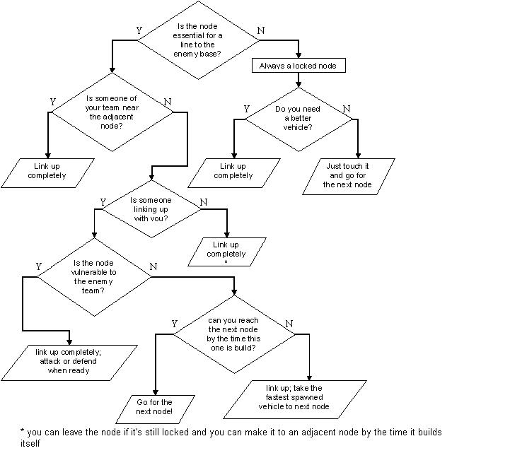

Onslaught player positions
I'm under heavy attack! - Gorge
Games change. They don't just evolve in graphics and sound, but in other areas
as well. Onslaught is a good example of this: this isn't a First Person Shooter
anymore. Whilst it still shows and plays in First Person, the overall gameplay
can better be described as a Real Time Strategy game.
This mixing of gametypes has an important disadvantage: you're no longer the
overseer of the action that can plan and act/react to all situations by deploying
troops at needed spots. Instead, you're degraded to a pawn:
one simple soldier that can only affect a part of the battlefield. To make matters
worse: there is no overseer! No one will order you around; the games are governed
by anarchy.
Luckily, you have your team mates with you; these people have the same goal
as you; with decent teamwork, nothing will stand in your way. But how to achieve
'decent' teamwork?
Your map is extremely important here. The display of the current situation is
the best way to estimate your next action. It doesn't show everything though;
things like player and vehicle positions are also important to know, yet these
aren't given.
This is where I come in: on this page, I'll explain you how to make some predictions
about positions, and how to react to those.
Predicting your own team
You'll spend a lot of time with your team, so it's a good deal to get to know
their skills. Check the scoreboard on a regular basis; the spread in personal
points gives a good idea of who are the best players, who are the mediocre ones
and who are the guys that...ehm...are rather new to the gametype (note: the
scoreboard is not a bulletproof way to determine skills, but it will do by lack
of a better way).
Attacks often bring the risk of arriving at a locked node, and linking up a
node isn't doing much good if nobody is heading toward an adjacent one. Good
players anticipate these kind of things, and act accordingly. They take care
of defence if they have to and change their course to the node that will be
available/vulnerable when necessary.
Onslaught doesn't have fixed roles, because spawn points will change in the course of the game. Most players (try to) spawn as close to the conflict zone as possible; this is the best spot for an attack, and in many cases it is this node that has to be defended. The disadvantage of repeatedly spawning there is that it drains the available vehicles fast. If the situation is somewhat a stalemate, don't keep spawning on that node (unless you really need to defend it). Spawn at other (locked) bases, or even teleport between them until you find a decent vehicle. Distance is an issue here: the further you spawn from the conflict zone, the faster your vehicle has to be to be usefull.
Defending is harder issue. Like in many sports, the best defence is an offence:
taking down their node will lock your own one. Unfortunately, this rule is completely
overused. Way too many players attack the nodes while forgetting about their
own nodes. Since both teams attack each others node, time is the factor
that determines which node will fall and which will be locked. This is where
the defender comes in: not to destroy all incoming forces, but to delay
them long enough so the rest of the team can lock your position. Defenders rarely
idle at their node: if they aren't repairing it they are placing a spider mine
field, and if they can't heal vehicles they man the turret. If things stay quiet
long enough, they can even transport back and forth between nodes to collect
additional weapons and ammo.
It's a part of defending in onslaught that you immediately change position once
your spot becomes locked, even if you are fighting an enemy at that time. Go
provide backup to help building the adjacent node, or pick another vulnerable
node that might need some defence.
Predicting the other team
Knowing where the enemy troops are starts out easy: they set up their nodes,
just like your team. The first battle takes place somewhere between two vulnerable
nodes, usually around the center of the map.
Unfortunately, the rest of the game isn't that easy to predict. They will come
for your node, but when? And with what vehicles? And in what amount? AFAIK,
about all combinations of offence and defence have been used, wether it was
a good or a bad idea.
Luckily, individual player skill will stay roughly the same during the match,
even with your enemies. Everyone has a certain playing style he or she plays
the best, and most players will strive toward this style. If you can hold up
for a couple minutes, you can start expecting things. Attack waves will consist
mainly of a certain type, so you can prepare the defences for this. Your team,
on the other hand, should be flexible and able to change your strategies better
to prevent this same kind of prediction from their behalf. Change co-ordinated
attacks to sneak attacks with mantas or vice versa. Increase the alertlevel
if their team has a redeemer whore. And try to attack on foot if they know too
well how to operate AVRiLs.
The node situation
Onslaught revolves around the nodes. You can't win the game without keeping them, and you can't win without destroying theirs either. For this reason, these points deserve some more attention in this chapter.
What is a node?
As you probably know, nodes are strategically placed points that can be build
by a team that controls a power core or another node that is adjacent to it.
To build a node, all an infantry has to do is to step on its base. After 2 seconds,
the node starts constructing itself. The node is ready after 29 seconds; it
spawns vehicles at this time, and any available turrets also become available.
Players can speed up this process by charging either the node base or the floating
circle above it with the link gun alt fire: a single player linking up will
spend 117 link gun ammo this way, reducing the total time to 15 seconds (this
also awards the player personal credit). Linking
up with team mates increases the build time with a factor 2.5 (instead of
2, when both parties link up independant).
Nodes come with indestructible shields that prevents all damage, but this shield
is only there as long as enemies don't control an adjacent node/core. Nodes
have ?? armor. The map displays when a node is under attack and the owners of
the node can't spawn there at that time (an 'attack' lasts until ?? seconds
after the last shot at the node is fired).
If a node is no longer connected with the power core through the series of nodes,
it becomes 'isolated'. When this happens, it slowly drains armor. The owners
can still spawn there and repair this, but they can only stop the draining by
re-establishing a link with the power core.
Which node should I get to?
The start is always a race to get to all the available nodes. While the first
persons on the node set this up, some others should head to the next one to
be able to immediately start building it once it becomes available.
Sooner or later, you'll run into your enemies. You should have defence once
your own nodes get vulnerable, and attack the nodes that are vulnerable...or
at least the ones that will be vulnerable by the time you get there.
On many maps, you will have more than one possibilities to attack and defend.
It depends on the setup of the map on which node you should focus, and the only
way to find this out is by trial-and-error (I've made a walkthrough of the official
maps here).
Should I link up the node?
Short answer: yes.
Long answer: check the picture:

How do I properly link up/repair a node?
This looks self-evident (target it with the link gun's alt-fire), but this is
far from properly linking up a node.
- first of all: to make the connection, you must target either the node base, the circle above it or the node shield. Your link beam is limited in length, so you aren't targetting the node when this beam doesn't change from a slightly arced bolt to a straight line.
- nodes aren't the end of the line: don't jump out of your vehicle at full speed to touch the node first! It takes just a couple seconds to stop and get out (literally); it will take a lot more time if you have to fetch your vehicle after linking up the node.
- never unlock more vehicles than necessary. Stick with what you came from and your team will have enough vehicles for the match. If you don't, you might even hinder team mates who had a strategy made up with the vehicle you're taking off with.
- as mentioned before: double linking gets the job done faster than individual beams
- if you arrive at a node while having a link gun, don't pick up the weapon locker right away. Weapon lockers don't give ammo, but rather set it to a certain minimum. Pick up the weapon locker while your ammo goes below 30; about all weapon lockers in onslaught contain a link gun and ammo for it
- there is no need to break the link while you pick up the weapon locker: just circle strafe around the node and pick it up while you walk over it
- the node has a yellow glow when it's being linked up, which is an indication for all enemies in the area. Manta's and snipers can wipe you away fast, so never stand still while linking up (unless a teammate tries to link up to you). At least circle strafe around so you're facing the direction where enemies are coming from. Oh, and link up to the part of the node that gives you the best view of what's going on around you.
- many nodes aren't completely in the open. If possible, try to put yourself next to a wall or in a corner to stay safe. Jumping on top of your vehicle sometimes helps against roadrages as well (it also allows you to get in quickly)
- the damage amp doesn't increase your repair ability. Avoid picking up this power-up until the enemies arrive
How do I attack a node?
This can be easy or extremely hard, all depending on the given situation. The
determing factors for this situation are the amount of players both teams have
in the area, which vehicles they posses, the position of the node and the armor
status of the node.
If you have a choice, it's best to use a co-ordinated attack against a node;
it breaks defences and nodes down much better than when you're alone. The disadvantage
is that it takes more time to organise an attack like this; everyone can hop
in a manta or raptor and start a sneak attack in a matter of seconds.
Lone wolf attacks are easy when there is no defence: a single hit on the node
makes sure no one will spawn there and if you're fast enough, you can destroy
the node before they can send in backup or lock it by attacking your own node.
Note that the infantry weapons deal the most damage: if you have a shock rifle,
send combo's between the node base and the circle; if you have a flak cannon,
get close and pepper that node base with alt fire; if you have sticky grenades,
stick it to the node base and let it explode every 5 or 6 grenades (to keep
the node under attack).
If you have neither weapon, you can use vehicles as well: 2 skymine combo's
at close range from the hellbender
drain a node faster than any other tool (except superweapons), small scorpion
bola's are also devastating and plasma weapons are another good choice. Vehicles
aren't that manoeuverable, so watch out for enemies.
Things are a lot harder if there is someone defending: 'just' killing him/her
won't be enough, because they can immediately respawn at that very spot. You
have to split your attention between the node and the player: first target the
node, so you keep additional players from spawning/teleporting to the scene.
Once the node is under attack, you can start fighting the defender(s). But don't
forget about the node either: if your enemy isn't dead in ?? seconds, you have
to fire another shot at the node to keep denying them their spawn point.
If the node status is in red, you shouldn't even focus on the defenders: keep
your aim fixed on that node until it's down before taking him on.
Final note: keep your distance if they have a manned turret.
Slow moving vehicles can't escape from being hit, but even manta's suffer greatly
from this kind of defense. Take out the turret before the node, except when
the node is almost destroyed when you get there...